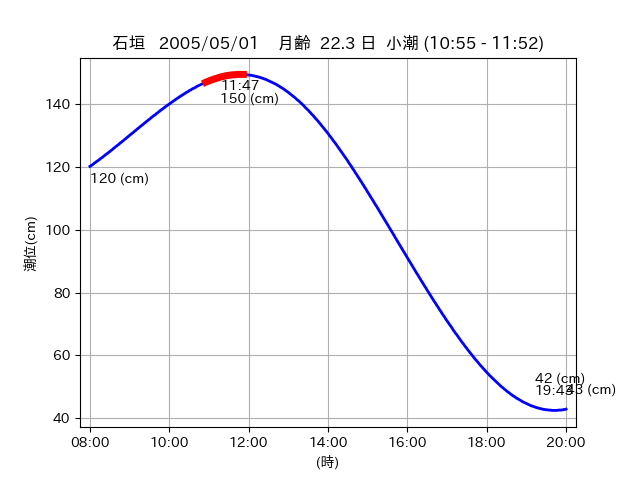

<!DOCTYPE html>
<html>
<head>
    
    <meta http-equiv="content-type" content="text/html; charset=UTF-8" />
    
        <script>
            L_NO_TOUCH = false;
            L_DISABLE_3D = false;
        </script>
    
    <style>html, body {width: 100%;height: 100%;margin: 0;padding: 0;}</style>
    <style>#map {position:absolute;top:0;bottom:0;right:0;left:0;}</style>
    <script src="https://cdn.jsdelivr.net/npm/leaflet@1.9.3/dist/leaflet.js"></script>
    <script src="https://code.jquery.com/jquery-3.7.1.min.js"></script>
    <script src="https://cdn.jsdelivr.net/npm/bootstrap@5.2.2/dist/js/bootstrap.bundle.min.js"></script>
    <script src="https://cdnjs.cloudflare.com/ajax/libs/Leaflet.awesome-markers/2.0.2/leaflet.awesome-markers.js"></script>
    <link rel="stylesheet" href="https://cdn.jsdelivr.net/npm/leaflet@1.9.3/dist/leaflet.css"/>
    <link rel="stylesheet" href="https://cdn.jsdelivr.net/npm/bootstrap@5.2.2/dist/css/bootstrap.min.css"/>
    <link rel="stylesheet" href="https://netdna.bootstrapcdn.com/bootstrap/3.0.0/css/bootstrap-glyphicons.css"/>
    <link rel="stylesheet" href="https://cdn.jsdelivr.net/npm/@fortawesome/fontawesome-free@6.2.0/css/all.min.css"/>
    <link rel="stylesheet" href="https://cdnjs.cloudflare.com/ajax/libs/Leaflet.awesome-markers/2.0.2/leaflet.awesome-markers.css"/>
    <link rel="stylesheet" href="https://cdn.jsdelivr.net/gh/python-visualization/folium/folium/templates/leaflet.awesome.rotate.min.css"/>
    
            <meta name="viewport" content="width=device-width,
                initial-scale=1.0, maximum-scale=1.0, user-scalable=no" />
            <style>
                #map_04d8e128f95657fe5cb0c56e4e768411 {
                    position: relative;
                    width: 2048.0px;
                    height: 1600.0px;
                    left: 0.0%;
                    top: 0.0%;
                }
                .leaflet-container { font-size: 1rem; }
            </style>
        
</head>
<body>
    
    
            <div class="folium-map" id="map_04d8e128f95657fe5cb0c56e4e768411" ></div>
        
</body>
<script>
    
    
            var map_04d8e128f95657fe5cb0c56e4e768411 = L.map(
                "map_04d8e128f95657fe5cb0c56e4e768411",
                {
                    center: [24.369, 123.964],
                    crs: L.CRS.EPSG3857,
                    ...{
  "zoom": 12,
  "zoomControl": true,
  "preferCanvas": false,
}

                }
            );

            

        
    
            var tile_layer_81928d95cdd2c296801d60749bc847ce = L.tileLayer(
                "https://cyberjapandata.gsi.go.jp/xyz/seamlessphoto/{z}/{x}/{y}.jpg",
                {
  "minZoom": 0,
  "maxZoom": 18,
  "maxNativeZoom": 18,
  "noWrap": false,
  "attribution": "\u5730\u7406\u9662\u5730\u56f3",
  "subdomains": "abc",
  "detectRetina": false,
  "tms": false,
  "opacity": 1,
}

            );
        
    
            tile_layer_81928d95cdd2c296801d60749bc847ce.addTo(map_04d8e128f95657fe5cb0c56e4e768411);
        
    
            var marker_a1f3a7b0210f2546969caf5ce0fc8c1a = L.marker(
                [24.3741, 123.9475],
                {
}
            ).addTo(map_04d8e128f95657fe5cb0c56e4e768411);
        
    
            var icon_fd1135e794e43a4f54beb5c9c7d7c7fc = L.AwesomeMarkers.icon(
                {
  "markerColor": "blue",
  "iconColor": "white",
  "icon": "info-sign",
  "prefix": "glyphicon",
  "extraClasses": "fa-rotate-0",
}
            );
        
    
        var popup_0837b915ddae9b9e92c61664de7f2a9e = L.popup({
  "maxWidth": "100%",
});

        
            
                var html_32b952f5fee7c4eaab8e201cde30aaa8 = $(`<div id="html_32b952f5fee7c4eaab8e201cde30aaa8" style="width: 100.0%; height: 100.0%;"><table><tr><td></td></tr><tr><td><center>20050501 No.1 </center></table></td></tr></table</div>`)[0];
                popup_0837b915ddae9b9e92c61664de7f2a9e.setContent(html_32b952f5fee7c4eaab8e201cde30aaa8);
            
        

        marker_a1f3a7b0210f2546969caf5ce0fc8c1a.bindPopup(popup_0837b915ddae9b9e92c61664de7f2a9e)
        ;

        
    
    
                marker_a1f3a7b0210f2546969caf5ce0fc8c1a.setIcon(icon_fd1135e794e43a4f54beb5c9c7d7c7fc);
            
    
            var marker_c00042f8a3de6aaa64d93b9e79c494ac = L.marker(
                [24.369, 123.964],
                {
}
            ).addTo(map_04d8e128f95657fe5cb0c56e4e768411);
        
    
            var icon_e503ff29806e7e672a14b34a2d5d72a7 = L.AwesomeMarkers.icon(
                {
  "markerColor": "blue",
  "iconColor": "white",
  "icon": "info-sign",
  "prefix": "glyphicon",
  "extraClasses": "fa-rotate-0",
}
            );
        
    
        var popup_08e7da6f1f229a7cb6f7a2564c9fe9ad = L.popup({
  "maxWidth": "100%",
});

        
            
                var html_ec2c3aaa070b80922934b3b8021bf326 = $(`<div id="html_ec2c3aaa070b80922934b3b8021bf326" style="width: 100.0%; height: 100.0%;"><table><tr><td></td></tr><tr><td><center>20050501 No.2 </center></table></td></tr></table</div>`)[0];
                popup_08e7da6f1f229a7cb6f7a2564c9fe9ad.setContent(html_ec2c3aaa070b80922934b3b8021bf326);
            
        

        marker_c00042f8a3de6aaa64d93b9e79c494ac.bindPopup(popup_08e7da6f1f229a7cb6f7a2564c9fe9ad)
        ;

        
    
    
                marker_c00042f8a3de6aaa64d93b9e79c494ac.setIcon(icon_e503ff29806e7e672a14b34a2d5d72a7);
            
</script>
</html>